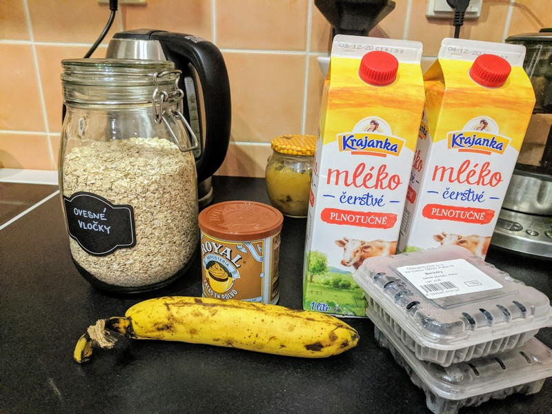
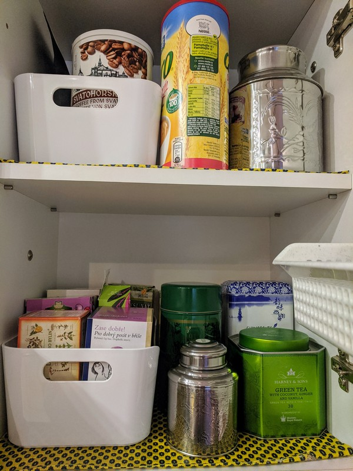
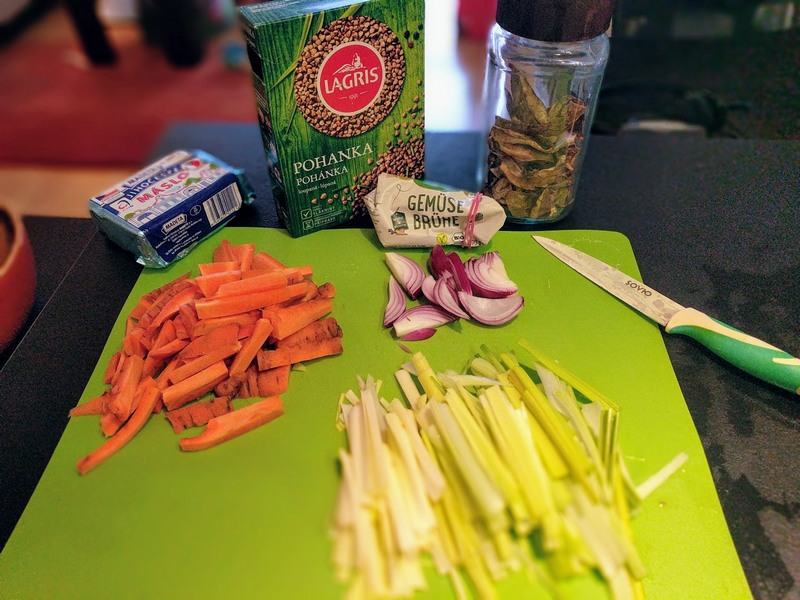
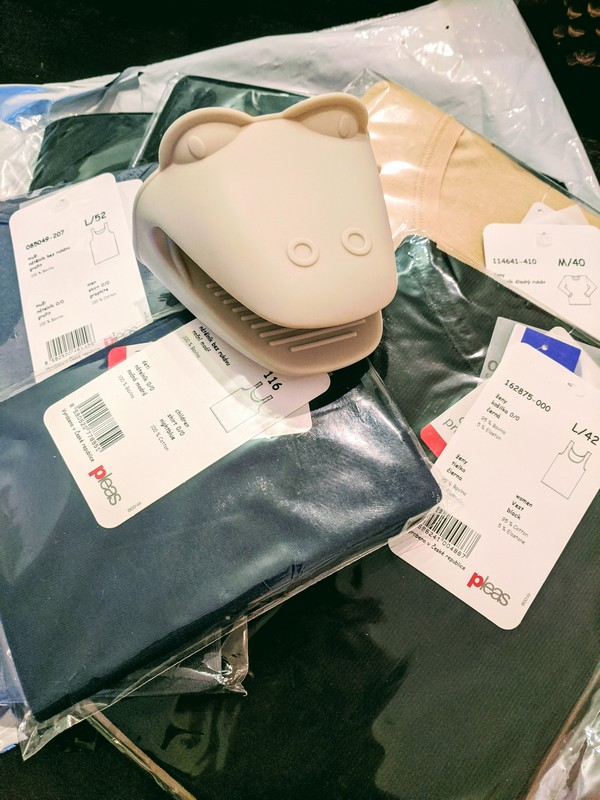
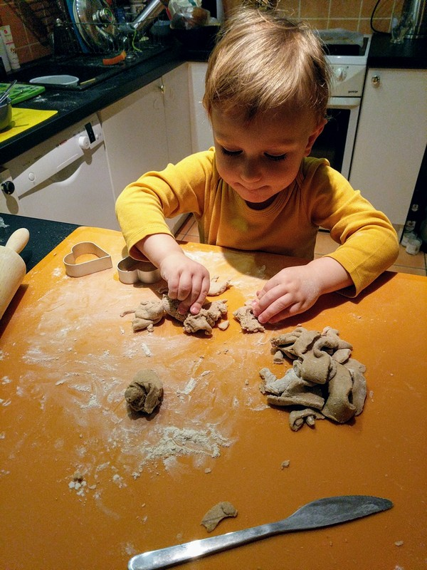

Někteří z vás si možná vzpomenou na můj někdejší pokus zaznamenat jeden den života na mateřské, když byl Olimu cca rok. Už delší dobu jsem si říkala, že by bylo fajn tento experiment zopakovat a porovnat, jak se náš život s Olim zase změnil. Mezitím přišel covid a mám pocit, že tím se změnilo úplně všechno 8-) Takže dnes přináším jednu malou vzpomínku na listopadový den, kdy ještě Péťa pracoval z domu a všichni jsme doufali, že druhou vlnou to všechno skončí…
6:00 Na některých věcech ani covid ani čas nic nezmění. Třeba jako na budíku od O. v 6 ráno 8-)…
6:19 Zjišťujeme, že O. se počural. (To byly ještě staré časy, kdy jsme byli moc líní dávat ho hned po probuzení na nočník.) Po přebalení následuje tulení u nás v posteli a mazlení se s “Kočí”, což je můj plyšový kočičí polštářek, který jsem dostala od paní Shirley - maminky Jennifer k Vánocům, a O. mi ho znárodnil 8-)
6:51 Ráno pouštíme Olimu pohádky na tabletu. Asi to není úplně výchovné, ale je to takový pohodový start do nového dne. My rodiče si u toho můžeme ještě v klidu dospat. Dneska už jsem odpočatá, tak si čtu ve zprávách na Seznamu rozhovor s ministrem zdravotnictví.
7:25 Vstávám a jdu dělat snídani. Jako obvykle připravuju ovesnou kaši na dvacátý způsob, ale stále se u nás těší velké oblibě. U míchání kaše většinou projíždím Instagram.

7:50 O. přichází na snídani.
8:00 O. dosnídal, hraje si s krabičkou náplastí. Vždycky chce přelepit nějaké imaginární bebínko a asi za deset sekund už si náplast zase strhává :D. Vybírá si knížky, které si spolu budeme číst. Aktuálně se těší velké oblibě leporelo o životě v mraveništi, náš evergreen Psí knížka od Terezy Říčanové, kterou naprosto milujeme, či Kufříková bible, co dostal od babičky.
8:35 Jako každé ráno se jdu postarat o obsah myčky a pak se pouštím do úklidu v naší skříňce s čajem a kávou, zatímco O. si staví koleje.

9:00 Převlíkám se z pyžama a poklízím, co je zrovna potřeba. Olíček si mezitím prohlíží svůj mašinkový časopis :-) Pak jdu zabalit knížku, kterou se chystám odeslat poštou jedné paní. Po dlouhé době se nám zase někdo ozval na inzerát na Bazoši. Vždycky jsem ráda, když se takhle nějaké věci zbavíme, ale zároveň ji ještě někdo využije.
9:45 Péťa vstává (ten čas ani nekomentuju 8-) Já už se pouštím do vaření oběda, krájím zeleninu na polévku. Oli mi asistuje a bere sušené houby, aby je odnesl ukázat do svého vozového parku. Jenom slyším: “Pěkně voní, čuchni si, mašinko!” :D P. jde do ložnice ke svému improvizovanému stolu pracovat.

10:06 Polévka už se vaří, tak si jdeme s Olíčkem hrát. Přichází mi SMSka od PPL - čekám dnes balíček s několika vánočními dárky.
10:45 Kurýr z PPL je tady. Běžím dolů pro balíček. Je to objednávka z Pleasu, kde jsem na podzim poprvé objednávala nějaké nátělníky a tričko pro O. Super, pokud hledáte na děti něco levného, bavlněného, českého a bez potisku komiksových postaviček 8-) Teď jsem udělala velkou objednávku k Vánocům pro celou rodinu. Jako dárek k nákupu přišla funny silikonová chňapka do kuchyně, které se hned zmocní Oli a začne si s ní hrát :D

11:00 Voláme si na Whatsupu s prarodiči.
11:55 Jdeme všichni společně obědvat. O. si dnes dokonce přidá polívku! A má recht, protože tahleta pohanková se sušenýma houbama je i moje oblíbená :-)
12:45 Péťa přemisťuje svou kancelář zpátky do obýváku a my s O. jdeme prozměnu okupovat ložnici. Na dobrou noc předčítám naši oblíbenou knížku o Krtečkovi.
13:13 O. vytuhnul, hurá! Jdu nahodit trochu make-upu. Péťa má pracovní hovor, takže musím počkat, až ho vyřídí, a pak se teprve můžu vrhnout na myčku, zaneřáděnou linku a vůbec provést malý rychloúklid. Protože mám dnes kreativní plány, stihnu ještě vyrobit várku slaného těsta na odpolední tvoření :-)
15:20 O. se budí. Náš malý otesánek dnes slupne na svačinu tři (malý) jogurty jako nic :D To říkám, že už dlouho je výhodnější ho šatit než živit.
16:00 K tátově úlevě vyrážíme ven 8-) - na poštu s balíkem. Po cestě potkáváme tetu Janu, se kterou se známe z batolecího cvičení. Přes léto jsme spolu hodně chodívali ven, ale teď se bohužel kvůli covidu moc nepotkáváme :( Postěžujeme si, jak to (ne)zvládáme a my pokračujeme na poštu. Tam O. šíleně zlobí, plazí se tam po zemi, já zpocená až na zadku a ještě narazíme na dost nepříjemnou ženskou za přepážkou. Naštěstí tam nejsou skoro žádný lidi, takže trapas není velikej 8-)
17:00 Konečně doma. Vytahuju těsto a nadšeně se pouštíme do výroby ozdob ze slaného těsta. Mám teda bohužel jen dvě srdíčková vykrajovátka, ale Olimu to vůbec nevadí, nadšeně testuje těsto a tuhle aktivitu si vyloženě užívá… Dokud mu nepodjede pod nohama stolička a on se při pádu nekousne do rtu… Z pusy mu valí krev a musí to pekelně bolet. Honem ohledávám ústa a uleví se mi, když vidím, že to nebude nic horšího. Běžíme do koupelny to umýt a pak vytahuju z mrazáku svůj svatý grál - chladící tělesa do termotašky. O. je začne olizovat a hned je po řevu :-)

18:00 Péťa pro dnešek končí s prací. Whatsupujeme s tetou, která má dnes svátek. Ohřívám večeři a pak mám v plánu poklidit si noční stolek a vytáhnout už i nějakou vánoční výzdobu.
20:25 Čtu Olimu na dobrou noc.
21:05 O. je konečně tuhej a já se jdu vyvalit na gauč. Mám v telefonu stažený Příběh skříně - krátký e-book o zákulisí oděvního průmyslu a je to tedy docela mazec.
22:15 Už toho dneska bylo až až, tak jdu taky spát.